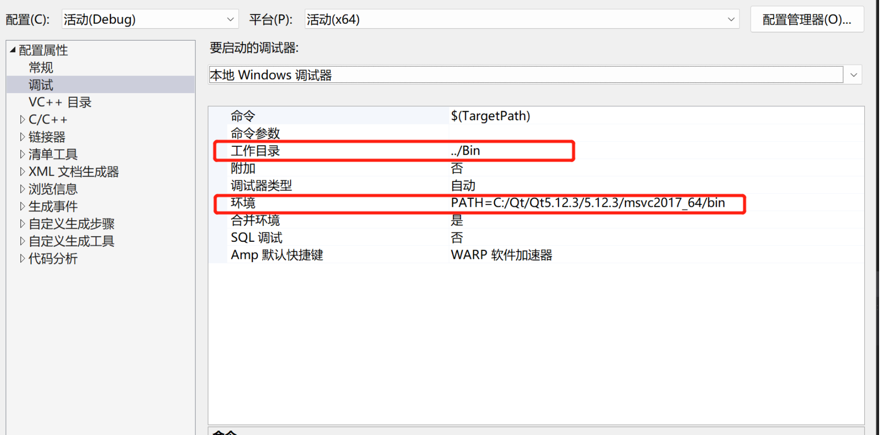

变量
常规变量
message("======>常规变量")
set(PATHS "/tmp" "/bin" "/lib")
message("${PATHS}")
foreach(PATH ${PATHS})
if(PATH)
message(${PATH})
endif()
endforeach()
message("${ABC}")
if(NOT DEFINED ABC)
set(ABC HiYumoz)
endif()
message("常规变量：ABC->${ABC}")
输出：
======>常规变量
/tmp;/bin;/lib
/tmp
/bin
/lib
常规变量：ABC->HiYumoz
环境变量
message("======>环境变量")
set(ENV{PATH} "/tmp;$ENV{QTDIR};$ENV{PATH}")
message("PATH: $ENV{PATH}")
unset(ENV{PATH})
message("PATH: $ENV{PATH}")
输出：
======>环境变量
PATH: /tmp;C:\Qt\5.15.2\msvc2019_64;D:\Application\WPS Office\12.1.0.16729\office6;D:\Program Files (x86)\VMware\VMware Workstation\bin\
PATH:
缓存 变量
CMake第一次构建时会生成CMakeCache.txt，基于CMakeCache.txt存储缓存变量。 此后的构造则会偷懒跳过很多步骤，直接从CMakeCache.txt获取缓存变量。（如果缓存错误，可以直接修改或删除CMakeCache.txt，也可以删除整个build文件夹，让CMake一切重新开始）
缓存变量的常见类型：
- BOOL: 布尔值ON/OFF
- FILEPATH: 文件路径
- PATH: 目录路径
- STRING: 字符串
缓存
message("======>缓存变量")
set(BUILD_DEBUG "ON" CACHE STRING "value create by yumoz")
message("BUILD_DEBUG: ${BUILD_DEBUG}")
message("BUILD_RELEASE: ${BUILD_RELEASE}")
if(NOT DEFINED MY_CACHE_VAR OR MY_CACHE_VAR MATCHES "old_value")
set(MY_CACHE_VAR "new_value" CACHE STRING "This is my cache variable" FORCE)
endif()
message("The value of MY_CACHE_VAR is ${MY_CACHE_VAR}")
option(TEST_DEBUG "option for debug" ON)
set(TEST_RELEASE "option for release" CACHE BOOL "Help Text:Release Into")
# 查找本地头文件
find_path(SPDLOG_PATH main.cpp PATHS ${CMAKE_SOURCE_DIR}/3rd/spdlog NO_DEFAULT_PATH)
# 将查找结果设置为缓存变量
set(SPDLOG_PATH ${SPDLOG_PATH} CACHE FILEPATH "Path to the spdlog file.")
# 直接设置缓存变量的值
set(MY_LIBRARY_PATH "/usr/local/lib" CACHE PATH "Path to the library files.")
# set(CMAKE_PREFIX_PATH /opt/abc/lib)
list(APPEND CMAKE_PREFIX_PATH /opt/def/lib)
设置调试模式
如何在VS下改Release为调试模式；
参考；
如何在CMAKE中设置
SET(CMAKE_CXX_FLAGS "${CMAKE_CXX_FLAGS} /Zi")
SET_TARGET_PROPERTIES(${PROJECT_NAME} PROPERTIES COMPILE_FLAGS "/Od")
SET_TARGET_PROPERTIES(${PROJECT_NAME} PROPERTIES LINK_FLAGS "/DEBUG")
VS的相关配置
设置调试的运行目录或工作目录
设置在Visual Studio中调试的环境变量，此设置仅仅在VS中点击那个绿色三角运行时有效，与你直接双击打开exe文件运行无关，有效避免多版本动态库全部写入系统环境变量的污染问题；
# Visual Studio中调试依赖的独立环境变量
set_property(TARGET ${PROJECT_NAME} PROPERTY VS_DEBUGGER_ENVIRONMENT "PATH=C:/Qt/Qt5.12.3/5.12.3/msvc2017_64/bin")
# 如果上面写法还是不行，那就试试这样写（保持原来默认的环境不变的情况下添加Qt的运行环境变量）
set(MY_QT_PATH "C:/Qt/Qt5.12.3/5.12.3/msvc2017_64/bin")
set(MY_PATH "PATH=%PATH%" ${MY_QT_PATH})
set_property(TARGET ${PROJECT_NAME} PROPERTY VS_DEBUGGER_ENVIRONMENT ${MY_PATH})
设置Visual Studio中调试时的工作根目录（即exe程序内的“./”所指的相对目录），由于工程使用CMake-gui构建的VS工程，所以 “${ProjectDir}” 代表.sln所在的目录；
# Visual Studio中的调试工作目录（即exe程序内的“./”所指的目录，仅在VS调试中有效）
set_property(TARGET ${PROJECT_NAME} PROPERTY VS_DEBUGGER_WORKING_DIRECTORY "${ProjectDir}../Bin")

设置调试的工作目录：
# 设置调试的工作目录
set_target_properties(${TARGET} PROPERTIES VS_DEBUGGER_WORKING_DIRECTORY "$(OutDir)")
##### 完整示例
cmake_minimum_required(VERSION 3.0)
project(SetWorkingDir CXX)
set(CMAKE_RUNTIME_OUTPUT_DIRECTORY ${CMAKE_BINARY_DIR}/bin)
set(DEBUG_WORKING_DIR "path/to/debug/directory")
set(RELEASE_WORKING_DIR "path/to/release/directory")
add_executable(MyExecutable main.cpp)
# 设置调试工作目录
set_target_properties(MyExecutable PROPERTIES VS_DEBUGGER_WORKING_DIR "${DEBUG_WORKING_DIR}")
# 根据构建类型选择设置工作目录
if(CMAKE_BUILD_TYPE STREQUAL "Debug")
set_target_properties(MyExecutable PROPERTIES VS_DEBUGGER_WORKING_DIR "${DEBUG_WORKING_DIR}")
elseif(CMAKE_BUILD_TYPE STREQUAL "Release")
set_target_properties(MyExecutable PROPERTIES VS_DEBUGGER_WORKING_DIR "${RELEASE_WORKING_DIR}")
endif()
设置隐藏VS控制台
设置配置属性-常规-输出目录
#设置解决方案的常规输出目录
set_property(GLOBAL PROPERTY USE_FOLDERS ON)
# 设置项目的常规输出目录
set_target_properties(项目名称 PROPERTIES RUNTIME_OUTPUT_DIRECTORY "${CMAKE_BINARY_DIR}/bin")
# 设置构建目录的根路径
set(CMAKE_ARCHIVE_OUTPUT_DIRECTORY ${CMAKE_BINARY_DIR}/lib)
set(CMAKE_LIBRARY_OUTPUT_DIRECTORY ${CMAKE_BINARY_DIR}/lib)
set(CMAKE_RUNTIME_OUTPUT_DIRECTORY ${CMAKE_BINARY_DIR}/bin)
参考
- 参考1；